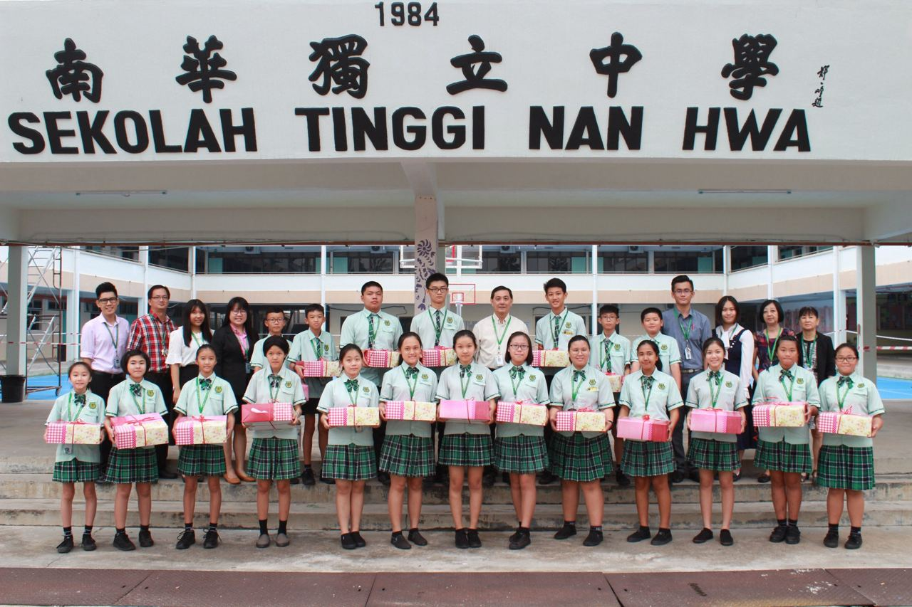
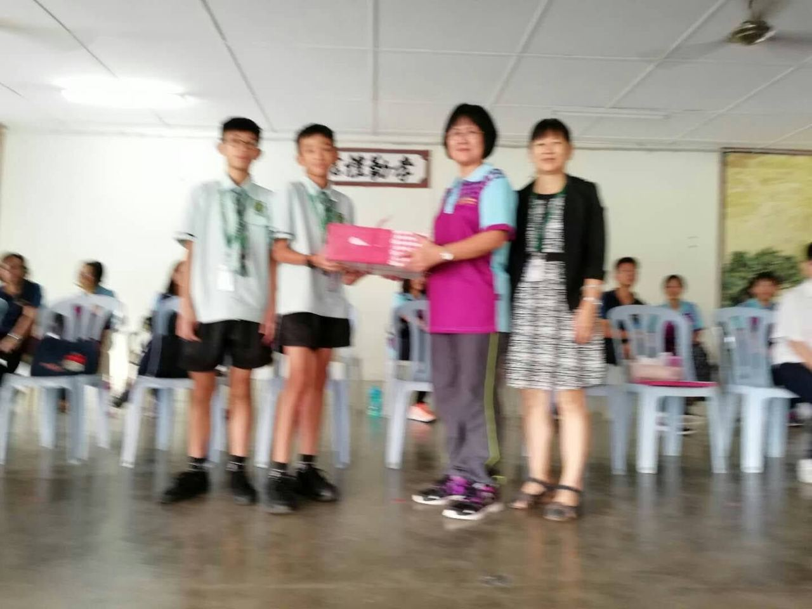
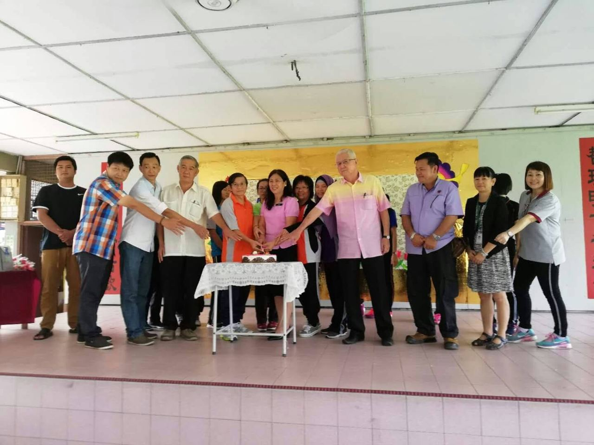
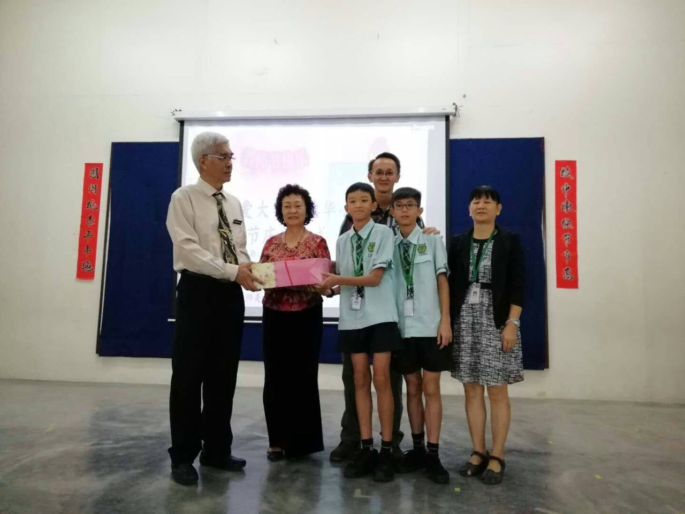
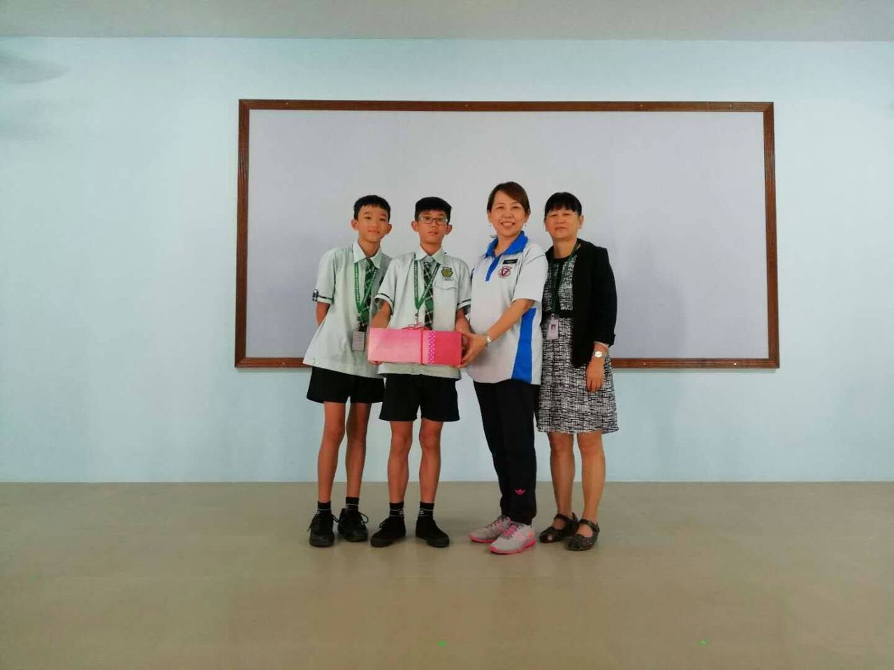
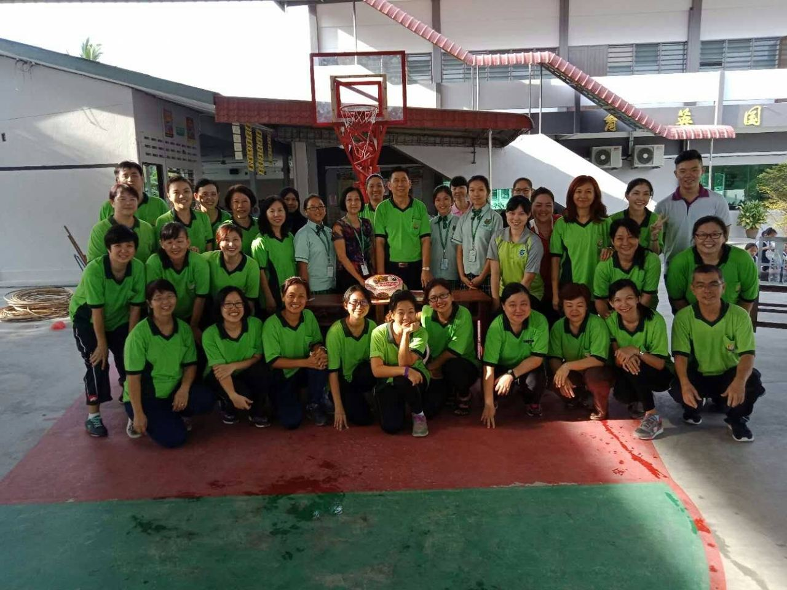
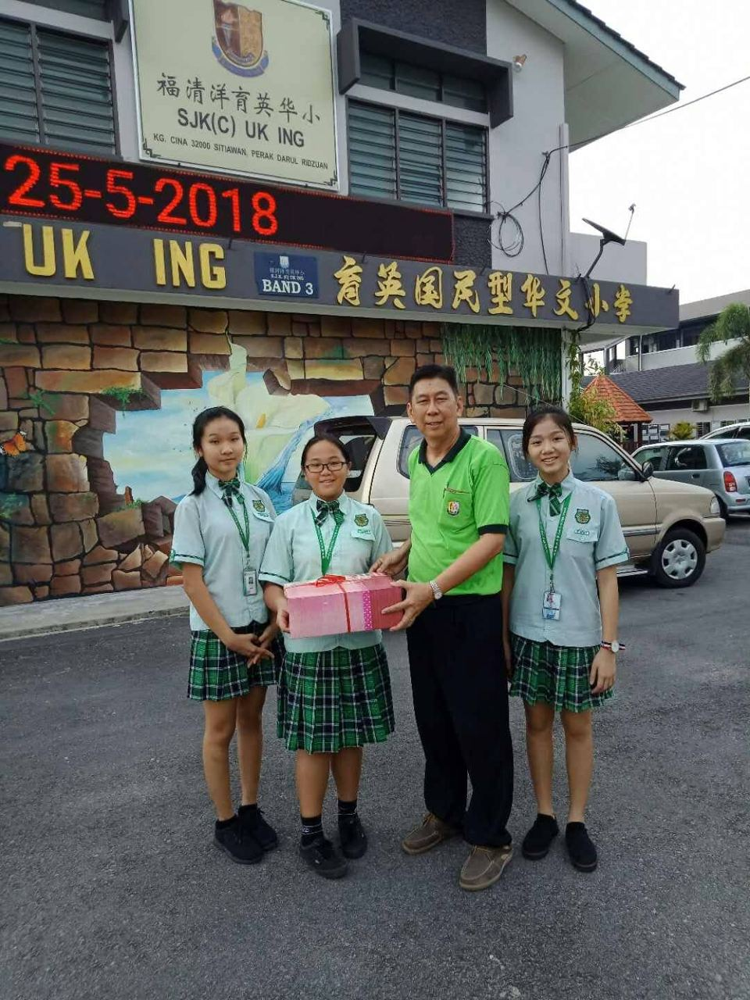
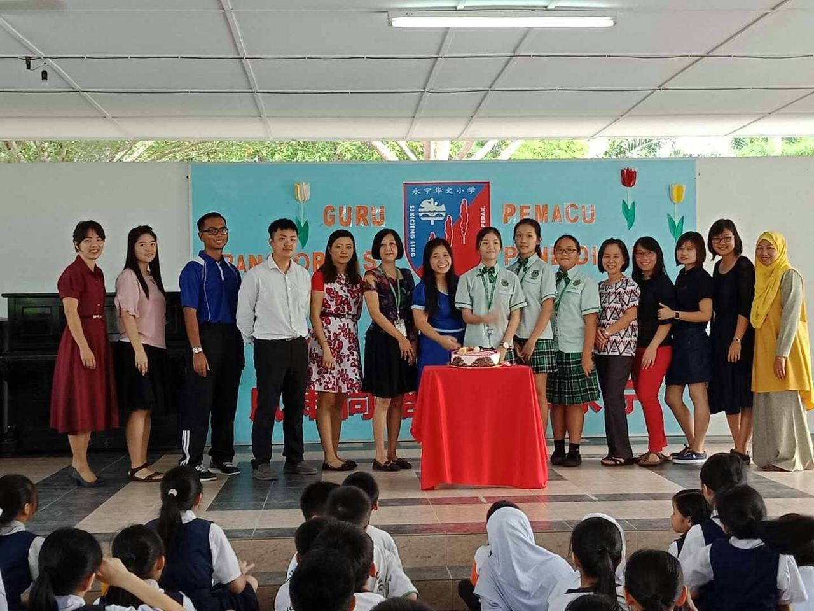

18/5/2018
18/5/2018
本月16日又是一年一度的教师节，作为承载着中华文化传承责任的华文独中必须让学生明白感恩的意义及力量。
因此今年本校再度举办教师节校友回校送教师节感恩蛋糕活动，除了学生们很开心可以再度回到母校，老师们也可以看见原本可爱的孩子们如今已经成长为一名青春无限的青少年，必然倍感欣慰。
下面是一些学生们回到母校赠送蛋糕的温馨画面以及出发前的大合照。







